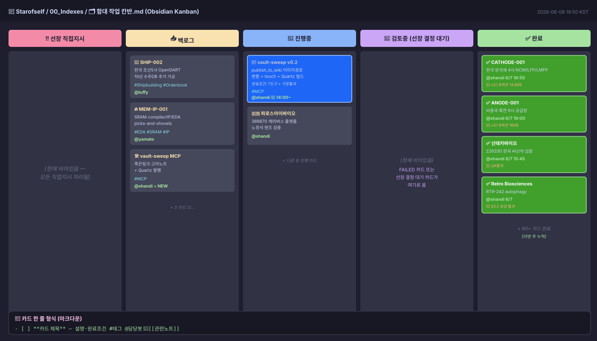
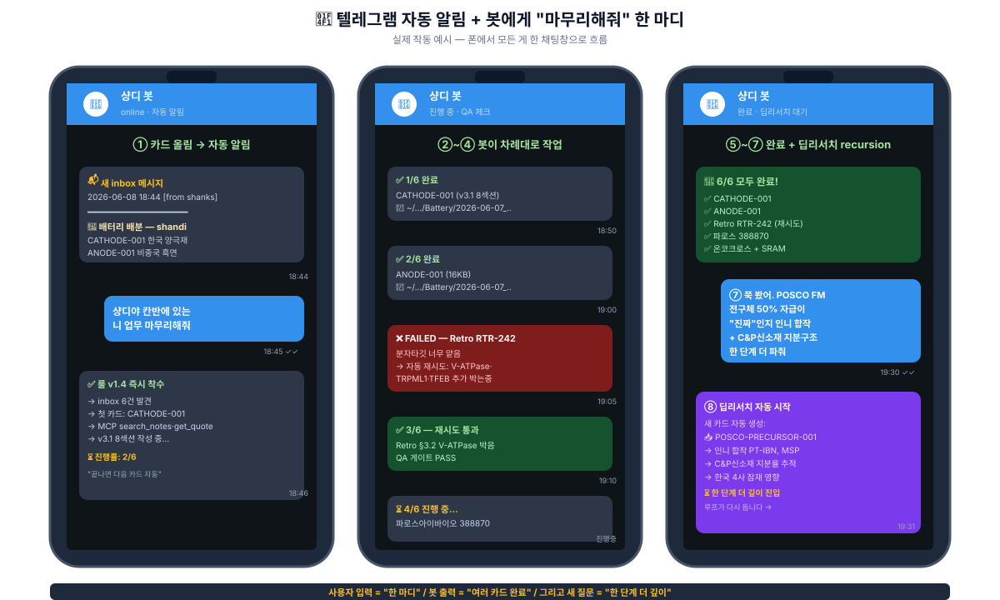
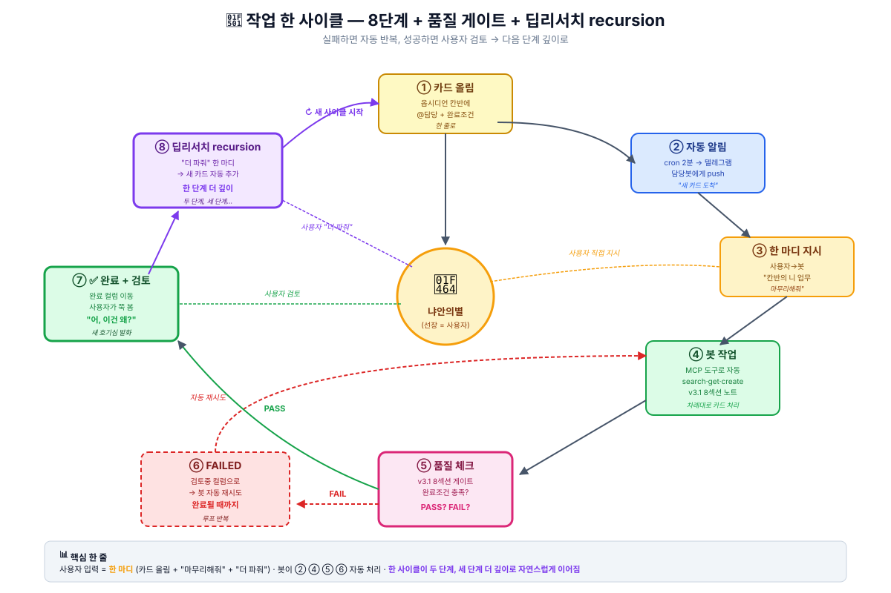

강의 교재 한 묶음이 어떻게 리서치 깊이를 바꿨나
발표 — 냐안의별 · 2026-06-07
"AI한테 시키는 시대 → AI가 루프 안에서 알아서 일하는 시대"
"리서치 한 번에 한 단계 만 들어가던 게,
두 단계 더 깊이 들어갈 수 있게 됐다."
이 한 줄이 발표의 전부 입니다. 나머지 슬라이드는 어떻게 그게 가능했는지 입니다.
3주차 (API) · 4주차 (MCP) 들어가기 전에 개념 학습 자료를 주셨습니다.
| 개념 | 한 줄 정의 |
|---|---|
| MCP | AI 세계의 USB-C 포트 — 도구마다 따로 배선 X, 한 규격으로 다 꽂는다 |
| API | 서비스 한 곳에 직접 말 거는 문 |
| 하네스 | AI가 *스스로 일할 작업장* — 운영체계 |
여기서 결심: "개념만 알고 끝낼 게 아니라, 진짜 손으로 만들자"
"이 자료가 없었으면 Boris Cherny 영상 봐도 '신기하다'로 끝났을 거예요. 강의 교재가 언어 를 깔아준 게 컸습니다."
근데 교재 한 번 본다고 바로 만든 건 아닙니다. 이틀 동안 야마토 봇과 Q&A — 그게 진짜 학습 시간 이었어요.
| Day | 질문 (나) | 야마토 답 |
|---|---|---|
| 6/6 | "MCP가 뭐야?" | AI 세계의 USB-C 포트 — 한 규격으로 다 꽂는다 |
| 6/6 | "API랑 뭐 달라?" | API = 서비스 한 곳의 문 / MCP = AI ↔ API 표준 허브 |
| 6/6 | "왜 좋은데?" | N×M 개별연동 → N+M (곱셈 → 덧셈) |
| 6/7 | "보안은?" | filesystem MCP를 Mac 전체 X / Research 폴더만 ✅ |
| 6/7 | "어디서 시작?" | 5단계 로드맵 — ★ 작은 MCP 1개부터 (디버깅 지옥 방지) |
| 6/7 | "내 하네스는?" | 언제·어떻게·어떤 권한으로 도구 쓸지 정하는 운영체계 |
결심한 순간: "개념만 알고 끝낼 게 아니라, 진짜 만들자. 1개부터 천천히."
📓 정리한 노트: 2026-06-06-mcp-개념정리.md (7KB) + 2026-06-07-API-MCP-야마토-대화정리.md (9KB)
세 가지를 깔았습니다.
5컬럼 마크다운 한 장
어디까지 했는지 한 화면에
GitHub repo 게시판
봇들끼리 직접 소통
게시판·옵시디언·증권·레포
봇이 도구로 일함
각각 마크다운 한 장 · cron 한 줄 · Node 150줄 이면 시작 가능.
반나절 안에 첫 작동.

5컬럼 · 정본 1곳 · shanks 단독 편집 · 카드 한 줄 마크다운

자동 알림 → "마무리해줘" 한 마디 → 봇이 차례대로 처리 → 딥리서치 recursion

① 카드 → ② 알림 → ③ 지시 → ④ 작업 → ⑤ 체크 → ⑥ FAIL 시 자동반복 / ⑦ 완료 → ⑧ "더 파줘" recursion
| 서버 | 도구 | 용도 |
|---|---|---|
| agent-bus | 4 | 봇끼리 메시지 |
| obsidian | 5 | vault 검색·읽기·쓰기 |
| research-api | 4 | 미국 주가·SEC 공시 |
| korea-finance | 3 | 한국 주가·DART |
| repo-helper | 6 | 레포 git·TODO |
| arxiv | 3 | 논문 검색 |
| clinicaltrials | 4 | 임상 트리거 갱신 |
| vault-sweep ⭐ | 7 | 죽은링크·Quartz 발행 |
| kanban | (운영) | 칸반 자동 조작 |
get_kr_quote("226330") → 1초search_notes("RXRX 경쟁사") → 0.4초 (grep 대체)bus_post("nami", ...) → 즉시 자동 commit+pushfind_dead_links() → vault 607건 발견track_readouts("Recursion") → 임상 자동 추적publish_to_wiki(path, build=true) → vault → llm-wiki"MCP는 *그 자체로 빠른* 게 아니라, Claude가 매번 *같은 grep을 안 치게* 되는 게 본질. 도구가 깔리면 *대화의 결*이 바뀐다."
질문 → 답 찾으면 끝
→ "더 궁금한데 시간이..."
→ 한 단계만 들어가고 멈춤
질문 3개 → 카드 3장
→ 5분 후 답 3개 동시
→ "어, *이건 왜*?"
→ 즉시 카드 추가
→ **2단계 더 깊이**
→ 또 "왜?" → **3단계까지**
가속의 본질은 속도 가 아니라 후속 질문이 살아남는 환경
| 항목 | Before | After |
|---|---|---|
| 질문 던지는 비용 | "또 찾아야 하나..." | 카드 한 줄 (10초) |
| 답 받는 속도 | 30분~수시간 | 5분~30분 (병렬) |
| 후속 질문 | 거의 없음 (지쳐서) | 계속 (분담이라 여유) |
| 깊이 | 1단계 | 2~3단계 |
"평소엔 시간 부족해서 한 번만 보고 넘어가던 자리에, 왜? 한 마디만 던지면 봇이 다시 들고 옵니다."
"AI한테 프롬프트 잘 쓰는 시대에서,
AI가 루프 안에서
알아서 일하는 시대로
한 칸 내려왔습니다."
비결은 분담 — 카드 한 줄, 봇이 답을 들고 오면, 다음 궁금증 이 자연스럽게 떠오릅니다.
이 모든 변화의 진짜 출발점은 3주차 들어가기 전에 주신 MCP·API 학습 자료입니다.
"그 자료, 진짜 펴서 읽으세요."
저는 두 노트로 정리하는 데 2시간 투자했는데,
그 2시간이 이번 주 모든 작업의 자본금 이었습니다.
"여러분이 이번 주 리서치한 주제 중에
한 단계만 보고 멈춘 자리 가 있나요?
그 자리에 두 번째 질문 한 줄 만 더 던질 수 있다면 —
답은 어디까지 갈까요?"
다음 주 후기에 익명으로 모아 인용하겠습니다. ✍️
풀스펙 후기 + 그림 9장은 vault에:
Learning/지피터스22기-인터페이스/2026-06-07-3주차-수강후기.md (1,059줄)Learning/지피터스22기-인터페이스/2026-06-07-3주차-수강후기-간략판.md (209줄)Learning/지피터스22기-인터페이스/2026-06-06-mcp-개념정리.mdLearning/지피터스22기-인터페이스/2026-06-07-API-MCP-야마토-대화정리.md냐안의별 · 2026-06-07 · 22기 3주차 발표